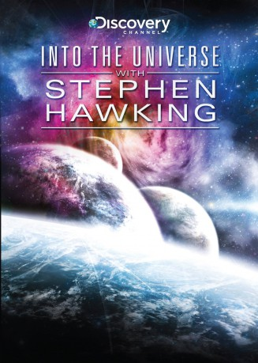

")
Alternativ: Stephen Hawking's Universe (Originaltitel)
 
 IMDB-Wertung: 8.6 / 10
IMDB-Wertung: 8.6 / 10  Metascore:
Metascore: 
Der weltberühmte Astrophysiker Stephen Hawking unternimmt eine Gedankenreise ins Weltall, behandelt dessen Geschichte vom Urknall über die Gegenwart bis in die weit entfernte Zukunft und erörtert Fragen über den Anfang und das Ende der Zeit und die Möglichkeit einer Existenz außerirdischen Lebens.
Jahr: 2010
Dauer: 43 Minuten
FSK:
Land: England Studio: Discovery ChannelTonspuren:
Untertitel:
Auflösung: 1080p (1920x1080) Größe: 3041 MB
Genre: Dokumentation, TV-Serie
Regisseur: Iain Riddick, Martin Williams, Nathan Williams
Drehbuch: Stephen Hawking
Soundtrack:
Darsteller:
 Benedict Cumberbatch als Stephen Hawking, 3 episodes, 2010
Benedict Cumberbatch als Stephen Hawking, 3 episodes, 2010Datei: X:\Dokumentationen\Weltraum\Stephen Hawking Geheimnisse des Universums\Stephen Hawking Geheimnisse des Universums E01.mkv seit 08.02.2019
Festplatte: HD Serien(SU-Z)+Dokus+Musik
 Es gibt insgesamt 22 Filme in der Gruppe 'Dokumentationen\Weltraum'
Es gibt insgesamt 22 Filme in der Gruppe 'Dokumentationen\Weltraum'